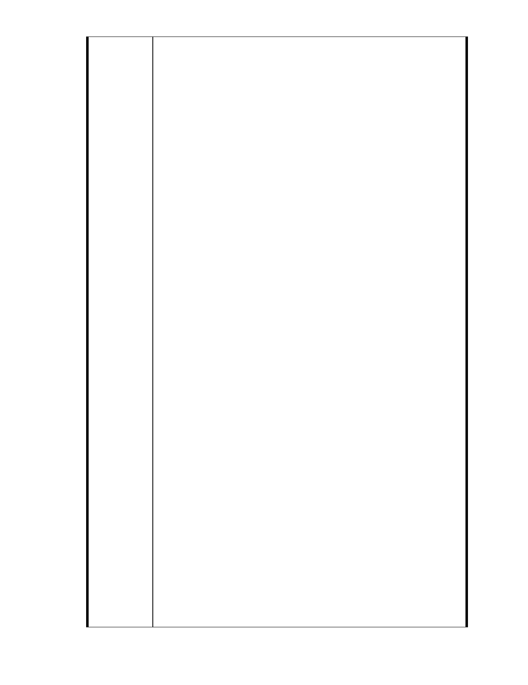

度環保團體都來這裡參觀慈濟的環保站。這是慈濟人挨罵後，默默的
為內湖與台北環境所作的貢獻與努力。這些事，相信那些大聲講話的
環保人士一定都不知道，因為他們從來就沒有來付出過。但是我知道，
因為我就在其中。這個社會，以行動貢獻環境的人，卻被以嘴巴保護
環境的人大聲咒罵。作為一個老內湖人，為什麼我還要沈默。
其實那些大聲咒罵的環保人士一直說慈濟的計畫案會大興土木，破壞
環境。其實慈濟內湖的土地，只使用部份的平地。平地後面 11 公頃
的山坡地，慈濟純粹是為了避免其他商業財團開發破壞，所以才買下
來保護不開發。沒想到慈濟好心要保護的山頭，民國九十五年間，被
政府挖了一個大洞，開了一條二十多米的東湖聯外道路。慈濟買下的
青翠的山，被削了一大半。那條道路在許多內湖居民來看根本不需要，
我們當時也極力反對，開路、挖山。那時候，環保的朋友在哪裡 ?
隨著時光推移，慈濟進入內湖這塊基地之前，鄰近的斜坡路上，已經一
棟棟高樓簇擁而立。慈濟幾次對我們說明的改善使用方案中，慈濟的觀
念還是順應自然，他們用來從事社會福利的面積是低度的使用。我們期
望慈濟除了社會福利，也增加生態教育的基地。讓這環境提供人與人之
間、人與自然之間，一種和諧對應的態度與方式。
' 我們相信慈濟是有歷史軌跡可尋的，十多年來，我們與志工們都是鄰
居，慈濟的確遵循著法令，從購地到現在，沒有蓋過一個瓦片或一根
柱子。我剛剛說的基地目前還是那一片鐵皮，完全原封不動。倒是志
工們的巧思，利用園區既有空間來作環保場及救難物資的儲備所。一
次簡報中，我們知道內湖的賑災毛毯，已經到了高雄莫拉客災民的家
裡，到海地倖存者身上，在四川地震的簡易屋裡，在巴基斯坦破落的
帳蓬中。
我們很遺憾，當慈濟人在救台北人，幫台灣人，為世界其他災民付出
的時候，他們還必須默默忍受其他反對者無理的謾罵。這些謾罵根本
沒有根據。以地質來說，我們在內湖住了半世紀，大湖山莊附近這個
基地，哪來礦坑 ? 那來斷層 ? 慈濟早已找專家做過探勘，證實沒有
這些地質問題。如果有斷層，礦坑，那捷運從這裡穿過去，政府的聯
外大道大剌剌的開過來，環保人士應該早早跳出來抗議吧 ! 政府打山
洞的時候你們在哪裡 ? 蓋垃圾場的時候，你們在哪裡 ? 很奇怪，慈
濟要做，就一定有問題 ? 慈濟這麼長久建立的信譽，究竟有誰比他們
更可靠 ? 慈濟的申請改善案，十多年遲遲沒有通過，但十年間，台北
- 75 -